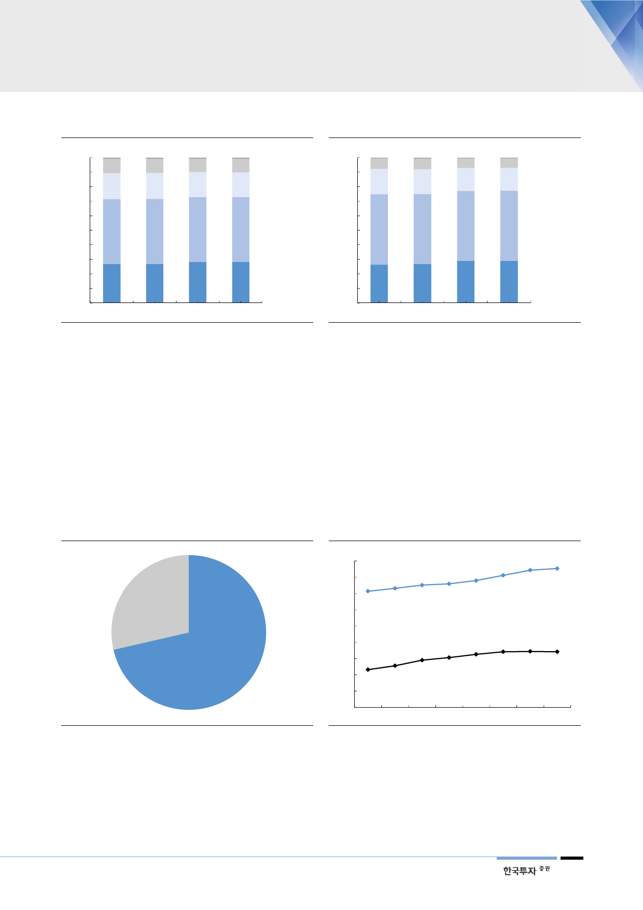

[그림 13] 신차 금융의 신용등급별 분포
(%)
100
10.0
90
80
17.9
70
60
50
44.7
40
30
20
10
26.8
0
2Q15
9.8
17.9
45.0
26.7
2Q16
9.3
17.1
44.6
28.3
2Q17
Deep subprime
9.5 Subprime
16.9 Nonprime
44.6 Prime
28.4 Super prime
2Q18
자료: Experian, 한국투자증권
[그림 14] 신차 중 리스금융의 신용등급별 분포
(%)
100
7.2
90
80
17.5
70
60
50
48.5
40
30
20
10
26.4
0
2Q15
7.4
17.2
48.1
26.8
2Q16
6.6
15.9
48.1
29.0
2Q17
Deep subprime
6.5 Subprime
15.8 Nonprime
48.3 Prime
29.0 Super prime
2Q18
자료: Experian, 한국투자증권
금융부문 회복의 두 번째
공통요인: 중고차 가치 상승
2. 중고차 가치 상승
금융부문 개선의 두 번째 배경은 중고차 가치 상승이다. 미국은 중고차 시장이 신
차 시장보다 2배나 큰 시장이다. 중고차 가치 상승은 경기호조와 SUV/트럭 중심
의 믹스개선 덕분이다. 여기에 작년 8~9월 강력한 태풍이 미국 남부지방을 강타
하면서 중고차 수요가 늘어난 것도 상승 이유 중 하나다. 중고차 시장은 SUV가
주도하는 신차 시장과 달리 여전히 세단의 비중이 높다. 따라서 중고차 가치 상승
은 세단 비중이 상대적으로 높은 현대기아차에 더욱 긍정적이다.
[그림 15] 미국 자동차 시장의 중고차/신차 비중
신차
29%
주: 2017년 기준
자료: 산업자료, 한국투자증권
중고차
71%
[그림 16] 신차보다 성장세가 돋보이는 중고차(미국)
(백만대)
45
중고차
40
42.2 42.7
40.6
35
35.7
36.6
37.6
38.0
39.0
30
25
20
신차
15
10
11.6
12.8
14.5
15.3
16.3
17.1
17.2
17.1
5
0
2010 2011 2012 2013 2014 2015 2016 2017
자료: 산업자료, 한국투자증권
9